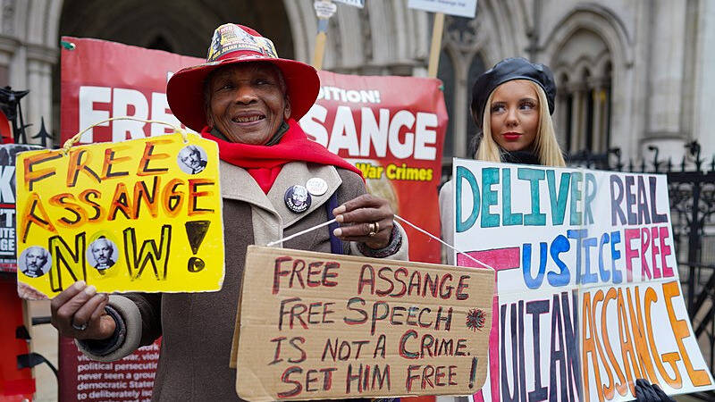

 Manifestanti del movimento 'Free Assange' fuori dall'Alta Corte di Londra, UK - di Alisdare Hickson, CC BY-SA 4.0
Il giornalismo è un campo complesso e variegato, in cui non tutti i professionisti si muovono con la stessa integrità. Esistono giornalisti che si limitano a riportare le versioni ufficiali e altri che, con coraggio e determinazione, scavano sotto la superficie per svelare le verità nascoste. Questi ultimi possono essere considerati i veri eroi del nostro tempo, impegnati a smascherare la propaganda e a portare alla luce fatti scomodi.
In un mondo in cui le informazioni circolano velocemente e le narrazioni possono essere manipolate, il compito di un vero giornalista è quello di non inginocchiarsi dinanzi al potere e di non raccontare favole, ma di scoprire e documentare la realtà oggettiva degli eventi. Questo lavoro può essere estremamente pericoloso; alcune delle figure più emblematiche della lotta per la verità sono state oggetto di pesanti ritorsioni.
In occidente, un esempio emblematico è Julian Assange, fondatore di WikiLeaks che ha messo a disposizione del mondo una serie di documenti riservati, rivelando crimini di guerra e abusi di potere da parte del governo statunitense e dei suoi alleati. Assange è stato perseguitato e costretto a vivere in una sorta di esilio; la sua storia è un monito sul costo del giornalismo d’inchiesta e sulla determinazione di individui che mettono a rischio la propria libertà per garantire che le informazioni importanti raggiungano il pubblico.
In oriente, altro esempio è Anna Politkovskaja, una giornalista russa nota per il suo coraggioso reportage sui conflitti in Cecenia e per la sua critica al regime di Putin. Politkovskaja ha affrontato ripetute minacce e alla fine è stata assassinata nel 2006. La sua morte ha sollevato interrogativi sul prezzo che i giornalisti devono pagare per raccontare la verità e il fatto che, in un regime oppressivo, il linguaggio della verità è troppo spesso silenziato dalla violenza.
Questi due fatti mettono in luce una scomoda verità: uno stato che si dichiara “democratico” ed un esempio mondiale di libertà silenzia l’operato dei giornalisti allo scopo di nascondere le verità scomode sui crimini accaduti e mantiene il controllo sull’informazione attraverso la paura e la censura. La libertà di stampa, fondamentale per il funzionamento di una democrazia sana, è spesso minacciata da leggi repressive, intimidazioni e violenze. I giornalisti che osano sfidare il potere e mettere in discussione le versioni ufficiali si trovano a dover affrontare non solo la censura, ma anche ritorsioni personali come accaduto con il caso Assange.
La questione alla base di tali tragedie è semplice: se uno stato è innocente, non avrà alcun interesse a silenziare i giornalisti. Al contrario, uno stato oppure un regime colpevole di crimini teme chi è in grado di rivelare la verità sul suo operato. È proprio nel tentativo di annebbiare la verità che molti stati intraprendono campagne contro i giornalisti e le organizzazioni che denunciano i crimini di questi stati.
Oggi più che mai, è fondamentale riconoscere il valore del giornalismo d’inchiesta e sostenere quei reporter che, con integrità e coraggio, combattono contro un sistema che vorrebbe vedere solo notizie controllate e ben confezionate. La verità è un bene prezioso, e la sua preservazione è un compito che riguarda tutti noi: un vero giornalista è colui che racconta verità scomode, non colui che racconta fiabe!